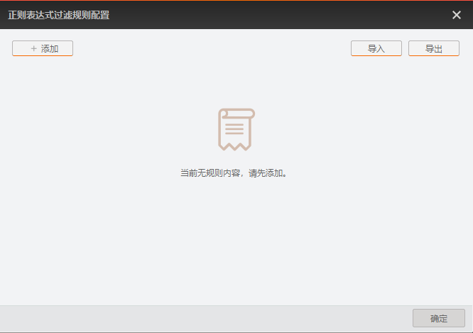
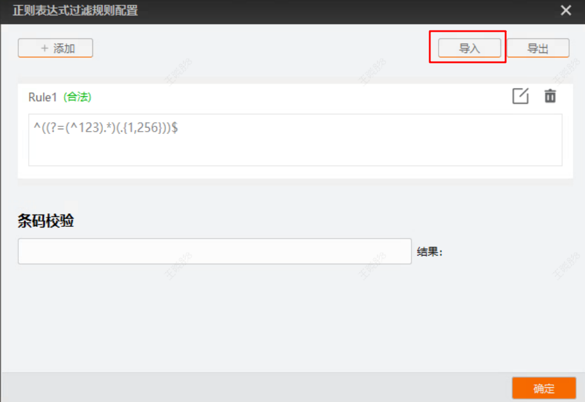
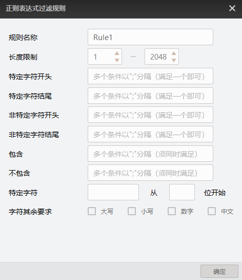
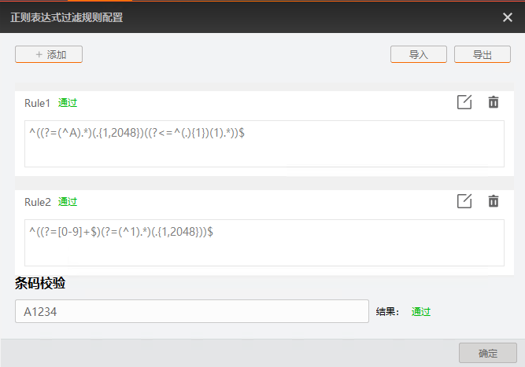

过滤规则模块支持设置正则表达式对条码进行复杂的匹配和过滤，例如条码中包含动态变化的部分或需要匹配多种格式的情况。
正则表达式过滤配置操作步骤如下。
在过滤规则区域过滤模式参数选择“正则表达式过滤”。
单击正则表达式快捷设置后的配置，打开正则表达式过滤规则配置界面，如下图所示。

通过导入本地文件或者自定义的方式设置正则表达式过滤规则。
在正则表达式过滤规则配置界面中，最多可设置10条过滤规则。
导入本地过滤规则文件
单击界面右上方的导入，选择本地的.xml文件，即可导入过滤规则。若成功导入，将弹出导入成功提示，同时界面将显示导入的过滤规则，如下图所示。

自定义设置过滤规则
单击界面左上方的添加，在弹出的配置界面中设置过滤规则的相关参数，然后单击确定，正则表达式过滤规则配置界面将显示新增的过滤规则。配置界面的参数说明如下：

规则名称：默认为Rule*，不可修改，其中*为数字。
长度限制：对需过滤的条码长度进行限制。
特定字符开头：对过滤条码的开头输入条件，多个条件以;分隔，条码满足其中某个条件则视为符合要求。
特定字符结尾：对过滤条码的结尾输入条件，多个条件以;分隔，条码满足其中某个条件则视为符合要求。
非特定字符开头：过滤条码的开头部分不能包含的内容，多个条件以;分隔，条码满足其中某个条件则视为符合要求。
非特定字符结尾：过滤条码的结尾部分不能包含的内容，多个条件以;分隔，条码满足其中某个条件则视为符合要求。
包含：输入过滤条码中必须包含的内容，多个条件以;分隔，条码须同时满足所有条件则视为符合要求。
不包含：输入过滤条码中不能包含的内容，多个条件以;分隔，条码须同时满足所有条件则视为符合要求。
特定字符：设置过滤条码中某特定字符必须从第几位开始。其中从左到右第一个数字代表第0位，例如，若设置为aaa从2位开始，则条码1aaa23不符合要求，12aaa3符合要求。
字符其余要求：设置过滤条码中其他字符的字符型，可选择大写、小写、数字、中文。
不同型号以及不同固件程序设备支持的过滤规则参数有所差别，具体请以实际显示为准。
完成过滤规则设置后，可以在条码校验框中输入条码内容，对设置的规则进行校验。符合过滤规则时，结果为通过， 否则显示不通过。存在多条过滤规则时，条码仅须满足其中一条即可校验通过，如下图所示。

正则表达式过滤规则配置页面支持如下可选操作。
单击规则右侧的，可以删除当前的过滤规则。
单击规则右侧的，可以修改当前的过滤规则。
修改过滤规则后，需重新输入条码内容进行验证。
单击界面右上方的导出，可以将界面上的过滤规则以.xml文件的格式导出，导出路径和文件名可自行设置。
在正则表达式过滤规则配置页面下方，单击确定以保存配置的正则表达式。
在过滤规则区域，通过正则表达式规则组号参数选择生效的正则表达式规则。
其他可配置过滤参数说明请参见普通过滤。